Projekt zaliczeniowy - Aplikacja wspomagająca osoby starsze
Skład zespołu
- Karol Tarłowski, nr albumu 195029
- Jarosław Sarmach, nr albumu 194798
- Maciej Dominik, nr albumu 192616
- leksandra Hriaznova, nr albumu 195568
Wszyscy członkowie należą do grupy dziekańskiej WZISS2-1211
Charakterystyka projektu
Aplikacja powstała z myślą i troską o osobach starszych. Nasza aplikacja ułatwia organizację dnia i przestrzeganie harmonogramu emerytą poprzez realizację postawionych celów. Za pomocą danej aplikacji osoba starsza może dodawać kolejne wizyty do lekarza, leki, które należy przyjąć w ciągu dnia oraz zapisywanie codziennych pomiarów ciśnienia, by móc kontrolować swój stan zdrowia. Istnieje także możliwość edycji wszystkich zdarzeń oraz ich usuwania. Wiadomo, że często ludzi mogą zapominać o wizytach do lekarza lub lekach, dlatego aplikacja posiada funkcje powiadomień, które będą przypominać o nadchodzących się wydarzeniach. Skoro aplikacja jest stworzona dla emerytów, które często mają problemy wzrokowe wyposażyliśmy aplikację w funkcje czytania wydarzeń na głos by ułatwić życie osobą starszym.
W dalszej części zostaną szczególowo omówione postawione i zrealizowane cele aplikacji, zostaną pokazane dostępne funkcję oraz zostaną opisane użyte technologię.
Cele oraz cechy aplikacji
Przed realizacją projektu postanowiliśmy przed sobą trzy główne cele, na które wzorowaliśmy się pod czas pracą nad aplikacja. Należą do nich:
-
Przypominanie o zażywaniu leków oraz nadchodzących wizytach lekarskich wraz z ułatwieniami dostępu - Czytanie alarmów przez syntezator mowy, aby osoby ze słabym wzrokiem nie musiały męczyć się z odczytaniem komunikatu.
-
Przechowywanie danych o chorobach i zażywanych lekach oraz synchronizacja z bazą w chmurze - Dodatkową funkcjonalnością będzie wykorzystanie „Always on display” w celu wyświetlania chorób i numeru komórkowego do wskazanej osoby w przypadku zasłabnięcia użytkownika aplikacji.
-
Zapisywanie pomiarów zdrowotnych – Po zmierzeniu ciśnienia użytkownik może zapisać dane i przegłądać pomiary z poprzednich dni, co umożliwia kontrolowanie stanu zdrowia.
Do głównych cech tej aplikacji należą m.in.:
-
Przyjazny interfejs graficzny bez zbędnych części składowych, umożliwiający łatwe poruszanie się po aplikacji.
-
Logowanie do aplikacji, umożliwiające zapisywanie danych o konkretnych chorobach, lekach oraz pomiarach ciśnienia dla danego użytkownika.
-
Hybrydowość aplikacji, pozwalająca używać ją zarówno na telefonie komurkowym, jak i na laptopie czy komputerze.
-
Dodawanie do kalendarza kolejnych wizyt do lekarza oraz przyjmowania leków w konkretny dzień i na konkretną godzinę.
-
Czytanie na głos powiadomień, co ułatwia życie osobą niedowidzącym.
Wykorzystywane technologię
Technologię użytę w aplikacji:
- Plain JavaScript

- jQuery

- Firebase
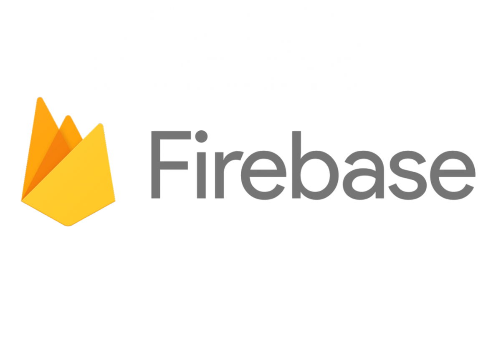
- Bootstrap
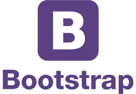
Opis funkcjonalności aplikacji
Do głównych funkcjonalności aplikacji należą m.in.:
- Logowanie się poprzez interfejs graficzny
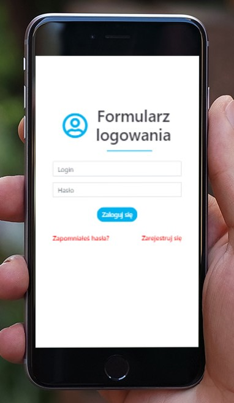 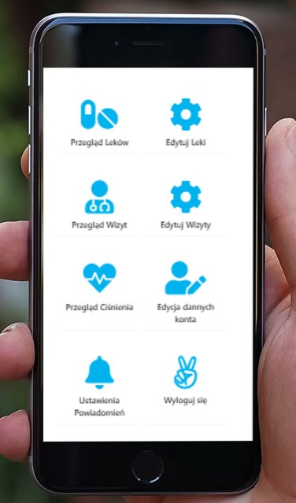
- Odzyskiwanie hasła dla zarejestrowaych użytkowników w sytuacji, gdy użytkownik zapomniał swoje poprzednie hasło
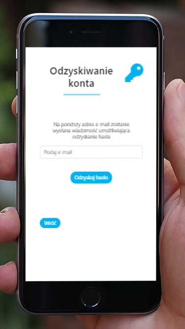
- Rejestracja nowych użytkowników i zapisywanie ich do bazy danych
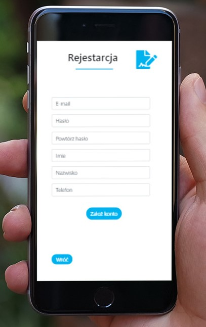
- Przegłądanie kalendarza wizyt do lekarza oraz leków, które należy przyjąć
Po przejściu do kalendarza należy wybrać konkretny dzień, który interesuje użytkownika i po wybraniu daty zostaną pokazane wydarzenia zaplanowane na ten dzień.
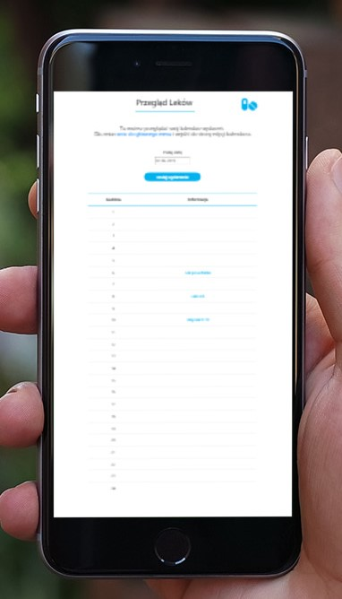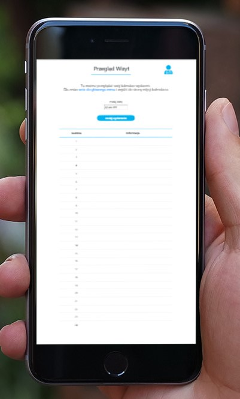
- Edycja dodanych wydarzeń oraz utworzenie nowych
W zakładkach edycji wydarzeń jest możliwość dodania nowego wydarzenia na konkretny dzień. W tym celu należy wybrać datę i kliknąć przycisk "Dodaj wydarzenie", po czym na ekranie pojawi się okienko, w którym należy napisać komentarz dotyczący wydarzenia oraz wybrać godzinę. Po kliknięciu przyciska "Zapisz" wydarzenie zostanie zapisane do bazy i wyświtlone w kalendarze.
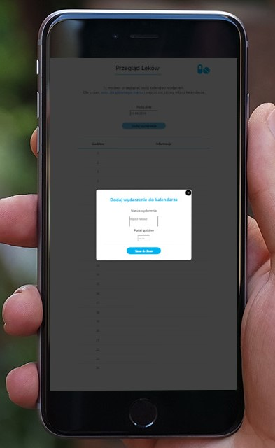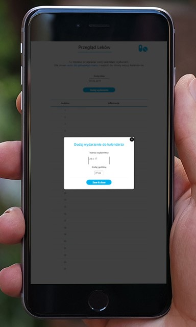
W zakładkach edycji wydarzeń jest możliwość usuwania już istniejących wydarzeń. W tym celu należy wybrać konkretny dzień i jeżeli na ten dzień są zaplanowane wydarzenia obok nich pojawią się przyciski umożliwiające ich usuwanie.
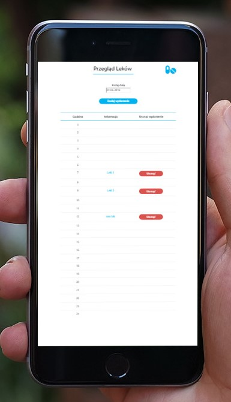
- Dodawanie pomiaru ciśnienia oraz przegłądanie statystyk z poprzednich dni
- Ustawienia powiadomień, alarmów oraz numeru alarmowego dla konkretnego użytkownika
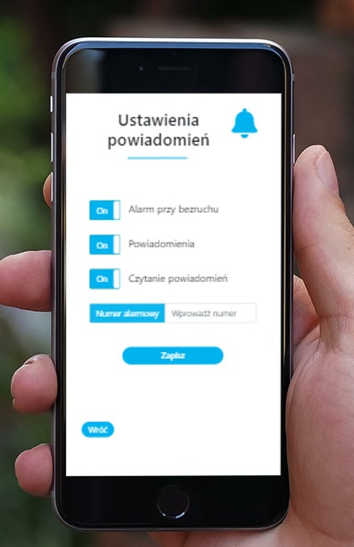
Linki do składowych części projektu
Prototyp aplikacji
Ewidencja działań i zadań - Trello
Zarządzanie projektem - repozytorium publiczny GitHub